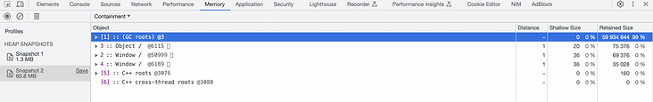

# JavaScript 内存泄漏
# 今天小编为大家带来的是社区作者 记得要微笑** **的文章，让我们一起来学习如何避免 JavaScript 中的内存泄漏。
像 C 语言这样的底层语言一般都有底层的内存管理接口，比如 malloc() free()。相反，JavaScript 是在创建变量（对象，字符串等）时自动进行了分配内存，并且在不使用它们时“自动”释放。释放的过程称为垃圾回收。这个“自动”是混乱的根源，并让 JavaScript（和其他高级语言）开发者错误的感觉他们可以不关心内存管理。
什么是内存泄漏？
简而言之，内存泄漏是 JavaScript 引擎无法回收的已分配内存。当您在应用程序中创建对象和变量时，JavaScript 引擎会分配内存，当您不再需要这些对象时，它会非常聪明地清除内存。内存泄漏是由于逻辑缺陷引起的，它们会导致应用程序性能不佳。
在深入探讨不同类型的内存泄漏之前，让我们先了解一下JavaScript 中的内存管理和垃圾回收。
内存生命周期
在任何编程语言中，内存生命周期都包含三个步骤：
- 内存分配：操作系统在执行过程中根据需要为程序分配内存
- 使用内存：您的程序使用以前分配的内存，您的程序可以对内存执行 read 和操作 write
- 释放内存：任务完成后，分配的内存将被释放并变为空闲。在 JavaScript 等高级语言中，内存释放由垃圾收集器处理
如果您了解 JavaScript 中的内存分配和释放是如何发生的，那么解决应用程序中的内存泄漏就非常容易。
内存分配
JavaScript 有两种用于内存分配的存储选项。一个是栈，一个是堆。所有基本类型，如 number、Boolean 和 undefined 都将存储在堆栈中。堆是对象、数组和函数等引用类型存储的地方。
# 静态分配和动态分配
** **
编译代码时，编译器可以检查原始数据类型，并提前计算它们所需内存。然后将所需的数量分配给调用堆栈中的程序。这些变量分配的空间称为堆栈空间（stack space），因为函数被调用，它们的内存被添加到现有内存（存储器）的顶部。它们终止时，它们将以 LIFO（后进先出）顺序被移除。
引用类型变量需要多少内存无法在编译时确定，需要在运行时根据实际使用情况分配内存，此内存是从堆空间（heap space） 分配的。
| **Static **allocation | **Dynamic **allocation |
|---|---|
| 编译时内存大小确定 | 编译时内存大小不确定 |
| 编译阶段执行 | 运行时执行 |
| 分配给栈（stack space） | 分配给堆（heap stack） |
| FILO | 没有特定的顺序 |
# **
**
# 栈
** **
Stack 遵循 LIFO 方法分配内存。所有基本类型，如 number、Boolean 和 undefined 都可以存储在栈中：
#
# 堆
** **
对象、数组和函数等引用类型存储在堆中。引用类型的大小无法在编译时确定，因此内存是根据对象的使用情况分配的。对象的引用存储在栈中，实际对象存储在堆中：
在上图中，otherStudent 变量是通过复制 student 变量创建的。在这种情况下，otherStudent 是在堆栈上创建的，但它指向堆上的 student 引用。
我们已经看到，内存周期中内存分配的主要挑战是何时释放分配的内存并使其可用于其他资源。在这种情况下，垃圾回收就派上用场了。
垃圾回收器
应用程序内存泄漏的主要原因是不需要的引用造成的。而垃圾回收器的作用是找到程序不再使用的内存并将其释放回操作系统以供进一步分配。
要知道什么是不需要的引用，首先，我们需要了解垃圾回收器是如何识别一块内存是不可用的。垃圾回收器主要使用两种算法来查找不需要的引用和无法访问的代码，那就是引用计数和标记清除。
# 引用计数
** **
引用计数算法查找没有引用的对象。如果不存在指向对象的引用，则可以释放该对象。
让我们通过下面的示例更好地理解这一点。共有三个变量，student, otherStudent，它是 student 的副本，以及 sports，它从 student 对象中获取 sports数组：
let student = {
name: 'Joe',
age: 15,
sports: ['soccer', 'chess']
}
let otherStudent = student;
const sports = student.sports;
student = null;
otherStudent = null;
在上面的代码片段中，我们将 student 和 otherStudent 变量分配给空值，告诉我们这些对象没有对它的引用。在堆中为它们分配的内存（红色）可以轻松释放，因为它是零引用。
另一方面，我们在堆中还有另一块内存，它不能被释放，因为它有对象sports引用。
当两个对象都引用自己时，引用计数算法就有问题了。简单来说，如果存在循环引用，则该算法无法识别空闲对象。
在下面的示例中，person 和 employee 变量相互引用：
let person = {
name: 'Joe'
};
let employee = {
id: 123
};
person.employee = employee;
employee.person = person;
person = null;
employee = null;
创建这些对象后 null，它们将失去堆栈上的引用，但对象仍然留在堆上，因为它们具有循环引用。引用计数算法无法释放这些对象，因为它们具有引用。循环引用问题可以使用标记清除算法来解决。
# 标记清除
** **
mark-and-sweep 算法将不需要的对象定义为“不可到达”的对象。如果对象不可到达，则算法认为该对象是不必要的：
标记清除算法遵循两个步骤。首先，在 JavaScript 中，根是全局对象。垃圾收集器周期性地从根开始，查找从根引用的所有对象。它会标记所有可达的对象 active。然后，垃圾回收器会释放所有未标记为 active 的对象的内存，将内存返回给操作系统。
内存泄漏的类型
我们可以通过了解在 JavaScript 中如何创建不需要的引用来防止内存泄漏，以下情况会导致不需要的引用。
# 未声明或意外的全局变量
** **
JavaScript 允许的方式之一是它处理未声明变量的方式。对未声明变量的引用会在全局对象中创建一个新变量。如果您创建一个没有任何引用的变量，它的根将是全局对象。
正如我们刚刚在标记清除算法中看到的，直接指向根的引用总是 active，垃圾回收器无法清除它们，从而导致内存泄漏：
function foo(){
this.message = 'I am accidental variable';
}
foo();
作为解决方案，尝试在使用后使这些变量无效，或者启用 JavaScript 的严格模式（use strict）以防止意外的全局变量。
# use strict
** **
严格模式可以消除 Javascript 语法的一些不合理、不严谨之处，减少一些怪异行为，比如以下示例：
"use strict";
x = 3.14; // 报错 (x 未定义
"use strict";
myFunction();
function myFunction() {
y = 3.14; // 报错 (y 未定义)
}
x = 3.14; // 不报错
myFunction();
function myFunction() {
"use strict";
y = 3.14; // 报错 (y 未定义)
}
#
# 闭包
** **
闭包（closure）是一个函数以及其捆绑的周边环境状态（lexical environment，词法环境）的引用的组合。换而言之，闭包让开发者可以从内部函数访问外部函数的作用域。在 JavaScript 中，闭包会随着函数的创建而被同时创建。
闭包的作用主要是实现函数式编程中的柯里化、模块化、私有变量等特性。柯里化是将一个接受多个参数的函数转换为接受单个参数的函数序列，这是通过把参数格式化成一个数组或对象并返回一个新闭包实现的。模块化是通过利用闭包的私有变量特性，把暴露给外部的接口和私有变量封装在一个函数作用域内，防止外部作用域污染、变量重复定义等问题。
尽管闭包有诸多优点，但同时也存在内存泄漏的问题。闭包会在函数执行完毕之后仍然持有对外部变量的引用，从而导致这些变量无法被垃圾回收。这种情况通常发生在循环中定义的函数或者事件绑定等场景中。为避免内存泄漏，我们需要手动解除对外部变量的引用，方式包括解除事件绑定、使用局部变量替代全局变量等技巧。
下面通过代码例子来进一步说明闭包的应用和内存泄漏问题：
// 例子1：柯里化
function add(x) {
return function(y) {
return x + y;
};
}
const add5 = add(5);
console.log(add5(3)); // 8
// 例子2：模块化
const counter = (function() {
let value = 0;
return {
increment() {
value++;
console.log(value);
},
decrement() {
value--;
console.log(value);
}
};
})();
counter.increment(); // 1
counter.increment(); // 2
counter.decrement(); // 1
// 例子3：内存泄漏
for (var i = 1; i <= 3; i++) {
(function(j) {
document.getElementById('button' + j).addEventListener('click', function() {
console.log('Button ' + j + ' clicked.');
});
})(i);
}
以上代码展示了柯里化和模块化两种闭包的应用场景，同时也包括了一个事件绑定场景下的内存泄漏问题。我们在使用闭包时需要格外注意内存泄漏的风险，以确保程序性能和稳定性。
# 计时器
** **
setTimeout 和 setInterval 是 JavaScript 中可用的两个计时事件。该 setTimeout 函数在给定时间过去后执行，而在 setInterval 给定时间间隔内重复执行，这些计时器是内存泄漏的最常见原因。
如果在代码中设置循环计时器，计时器回调函数会一直保持对 numbers 对象的引用，直到计时器停止：
function generateRandomNumbers(){
const numbers = []; // huge increasing array
return function(){
numbers.push(Math.random());
}
}
setInterval((generateRandomNumbers(), 2000));
要解决此问题，最佳实践就是在不需要计时器的时候清除它：
const timer = setInterval(generateRandomNumbers(), 2000); // save the timer
// on any event like button click or mouse over etc
clearInterval(timer); // stop the timer
Out of DOM reference
** **
Out of DOM reference 表示已从 DOM 中删除但在内存中仍然可用的节点。垃圾回收器无法释放这些 DOM 对象，让我们通过下面的示例来理解这一点：
let parent = document.getElementById("#parent");
let child = document.getElementById("#child");
parent.addEventListener("click", function(){
child.remove(); // removed from the DOM but not from the object memory
});
在上面的代码中，在单击父元素时从 DOM 中删除了子元素，但是子变量仍然持有内存，因为事件侦听器始终保持对 child 变量的饮用。为此，垃圾回收器无法释放 child，会继续消耗内存。
一旦不再需要事件侦听器，应该立即注销它们：
function removeChild(){
child.remove();
}
parent.addEventListener("click", removeChild);
// after completing required action
parent.removeEventListener("click", removeChild);
实际案例
在实际项目开发中，稍有不慎，代码可能就会导致内存溢出的情况，借一些实际案例，讲一讲我是如何分析内存溢出的。
# 死循环，局部变量导致内存溢出
** **
当有些循环没有充分考虑到边界条件时，很容易陷入死循环，比如下面示例：
const getParentClassName = (element, fatherClassName) => {
const classNames = [];
let currentElement = element;
if (fatherClassName) {
while (
!(currentElement?.className || "").includes(fatherClassName) &&
currentElement !== document.body
) {
classNames.push(currentElement?.className || "");
currentElement = currentElement?.parentElement;
}
} else {
while (currentElement !== document.body) {
classNames.push(currentElement?.className || "");
currentElement = currentElement?.parentElement;
}
}
return classNames;
};
getParentClassName(null);
这段代码功能是收集两个元素间的类名，当参数 element=null 时，就陷入了死循环，每次遍历都会向 classNames 数组追加新值，最终导致内存溢出。
那这种情况要如何分析定位呢？不妨先使用 Performance 可视化检测内存泄漏，如下：
从图中可以看出，getParentClassName 函数无限次的被调用，执行期间 JS Heap 内存占用一直攀升，内存得不到释放，但具体是哪些变量内存占用很高，无法释放回收呢？
可以采集内存快照分析内存分配情况。因为页面崩溃，会采集不到快照，因此代码块中加上如下控制：
let count = 0;
const getParentClassName = (element, fatherClassName) => {
const classNames = [];
let currentElement = element;
if (fatherClassName) {
while (
!(currentElement?.className || "").includes(fatherClassName) &&
currentElement !== document.body
) {
classNames.push(currentElement?.className || "");
currentElement = currentElement?.parentElement;
}
} else {
while (currentElement !== document.body) {
classNames.push(currentElement?.className || "");
currentElement = currentElement?.parentElement;
count++;
if (count > 10000000) break;
}
}
return classNames;
};
getParentClassName(null);
分别在代码第 30 行和第 36 行设置断点，代码执行到第 36 行，选择“Heap snapshot”，点击“take snapshot”，生成第一个 snapshot。
继续调试，代码运行到第30行，点击“take snapshot”，生成第二个 snapshot，记录两个断点执行过程的内存分配。
我们可以看到这么一些堆照信息：
- Constructor 表示使用此构造函数创建的所有对象。
- Distance 使用最短的节点路径显示到根的距离。
- Shallow size 对象自身占用内存的大小。通常只有数组和字符串的 shallow size 比较大。以字节为单位。
- Retained size 对象本身连同其无法从 GC Root 到达的相关对象一起删除后释放的内存大小。因此，如果 Shallow Size ~= Retained Size，说明基本没怎么泄漏。而如果 Retained Size > Shallow Size，就需要多加注意了。以字节为单位
排查一下 Retained Size 值偏大的对象，很明显发现内存溢出是由变量 classNames 导致的。
上述是按照 Summary 模式查看快照，还有其他一些模式：
Summary view 摘要视图，显示按构造函数名称分组的对象。使用它根据按构造函数名称分组的类型来搜索对象（及其内存使用）。它对于追踪 DOM 泄漏特别有帮助。
Comparison view 比较视图，显示两个快照之间的差异。使用它来比较操作前后的两个（或多个）内存快照。检查释放内存和引用计数中的增量可让您确认内存泄漏的存在和原因。
Containment view 包含视图，允许查看堆内容。它提供了一个更好的对象结构视图，帮助分析在全局命名空间（窗口）中引用的对象，以找出它们周围的原因。使用它来分析闭包并深入了解您的对象。

Statistics view 统计视图，显示内存大小使用统计（扇形图）
另外，我们还可以启用“Allocation instrumentation on timeline”模式，获取时间线内存分配情况：
# Mobx 将属性转换成可观察，导致内存溢出
有一个穿梭框组件在使用过程中产生内存溢出，不清楚就其是什么原因引起的，先使用 Performance 可视化检测内存泄漏，如下：
可以看出内存占用飞速增长，我们再放大看看具体是哪些脚本执行导致的：
具体观察可以发现，有重复可疑的代码片段之行过程中导致内存占用的增长。为了方便定位具体是哪些变量内存溢出，我们找一个重复执行比较频繁的函数做如下改造：
var defineObservablePropertyExeCount = 0;
function defineObservableProperty(target, propName, newValue, enhancer) {
defineObservablePropertyExeCount += 1;
if (defineObservablePropertyExeCount > 1000000) {
return null;
}
var adm = asObservableObject(target);
assertPropertyConfigurable(target, propName);
if (hasInterceptors(adm)) {
var change = interceptChange(adm, {
object: target,
name: propName,
type: "add",
newValue: newValue
});
if (!change)
return;
newValue = change.newValue;
}
var observable = (adm.values[propName] = new ObservableValue(newValue, enhancer, adm.name + "." + propName, false));
newValue = observable.value; // observableValue might have changed it
Object.defineProperty(target, propName, generateObservablePropConfig(propName));
if (adm.keys)
adm.keys.push(propName);
notifyPropertyAddition(adm, target, propName, newValue);
}
加上一个执行次数的控制，在此处打上断点，然后等代码执行到此处，点击“take snapshot”录制就可以得到下面内存分配情况：
从图中可以发现，ObservableValue 类型和ObservableObjectAdministration 类型对象占用内存很高，基本可以断定由它们引发内存泄漏的。
点击查看每一个 ObservableValue 类型对象，发现都是 next 和 nextBrother 对象，在项目全局搜索这两个关键字，基本都是指向 IFlatTree 树状结构：

export interface IFlatTree extends ITree {
parent?: IFlatTree;
level?: number;
next?: IFlatTree;
nextBrother?: IFlatTree;
show?: boolean;
}
这个树状数据是由穿梭框组件 onchange 回调函数抛出的，然后代码将其存入Mobx 状态管理仓库中

Mobx 会对存入的变量深度遍历，每个属性都进行 Observable 封装
但是，这个树状结构有37层，每个节点对象的每个属性都要 Observable 封装，执行过程中产生内存消耗足以导致内存溢出
进一步分析发现，next 和 nextBrother 节点对象并不会在实际业务逻辑中使用到，而且也不会改动，所以我们可以只将树状数据的单层进行 Observable 封装，不对其深度遍历。
根据上面处理后，想着在 onchange 回调打印 values，发现 console.log 打印也可能会导致内存溢出，打印的变量不会被垃圾回收器回收。原因可以参考此文章：千万别让 console.log 上生产！用 Performance 和 Memory 告诉你为什么（https://juejin.cn/post/7185128318235541563）
参考
#
内存管理
（https://developer.mozilla.org/zh-CN/docs/Web/JavaScript/Memory_management）
如何避免 JavaScript 中的内存泄漏
（https://blog.logrocket.com/escape-memory-leaks-javascript/）
调试 JavaScript 内存泄漏
（https://www.debugbear.com/blog/debugging-javascript-memory-leaks）
使用 Chrome 查找 JavaScript 内存泄漏（https://stackoverflow.com/questions/19621074/finding-javascript-memory-leaks-with-chrome）
修复内存问题
（https://developer.chrome.com/docs/devtools/memory-problems/）
什么是闭包？闭包的作用? 闭包会导致内存泄漏吗？（https://www.zhihu.com/question/601215553）
JavaScript的工作原理：内存管理+如何处理4个常见的内存泄漏（https://cloud.tencent.com/developer/article/1869444）
使用 Chrome Devtools 分析内存问题（https://fe.okki.com/post/62cbfea7136f570343d89416/）
手把手教你排查Javascript内存泄漏
（https://zhuanlan.zhihu.com/p/322356761）
点击左下角阅读原文，到 SegmentFault 思否社区 和文章作者展开更多互动和交流，“公众号后台“回复“ 入群 ”即可加入我们的技术交流群，收获更多的技术文章~
- END -
往期推荐
社区精选｜【webpack 系列】从核心概念到上手配置
社区精选｜如何理解 CSS step 函数中的 jump-* 关键词？
社区精选｜Spring Boot 启动注解分析
文章来源：https://mp.weixin.qq.com/s/1lyWTueTH7Et3DfAmFQRxg